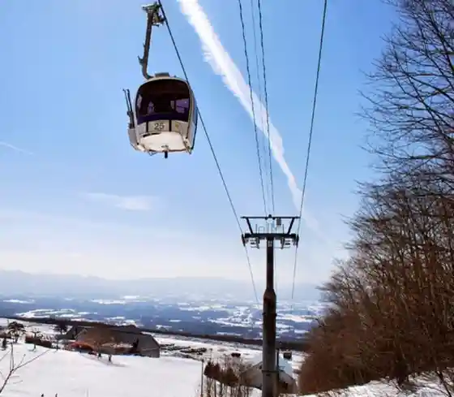
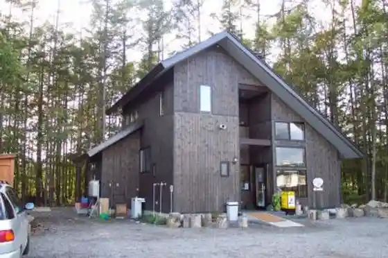
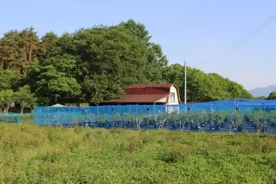
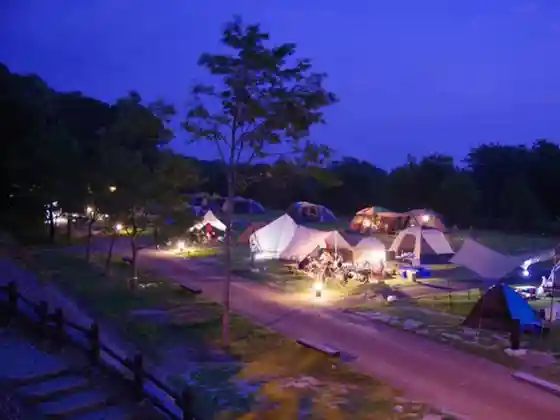

Iwatekogen Su no Park
Shizukuishi, Iwate · 019-693-4000 · Official / source link

Tezu Kuri Aisukuriimu Bokusha Matsu Bokkuri
Shizukuishi, Iwate · 019-691-5030 · Official / source link

Buruberii Village
Shizukuishi, Iwate · 090-8259-1582 · Official / source link

Amihari Onsen Campground
Shizukuishi, Iwate · 019-693-2211 · Official / source link

Beriizu Garden
Shizukuishi, Iwate · 019-693-2233 · Official / source link
Shizukuishi Ski Area
Shizukuishi, Iwate · 019-693-1111 · Official / source link
Shizukuishi Gorufu Ba
Shizukuishi, Iwate · 019-693-1111 · Official / source link
Oyanagi Sawa Sabo Koen Campground
Shizukuishi, Iwate · 019-692-5577 · Official / source link
Amihari Onsen Ski Area
Shizukuishi, Iwate · 019-693-2211 · Official / source link
Mochi Workshop
Shizukuishi, Iwate · 019-695-2441 · Official / source link
Iwateken Ei Okunai Onsui Puru
Shizukuishi, Iwate · 019-693-3751 · Official / source link
Teuchi Chisoba Yama Ju
Shizukuishi, Iwate · 019-691-1158 · Official / source link
Teuchi Chisoba Kan Shokudo
Shizukuishi, Iwate · 019-692-2031 · Official / source link
Arine Sanso (Higaeri Nyuyoku Shisetsu)
Shizukuishi, Iwate · 019-693-3232 · Official / source link
Amihari Onsen Kan (Higaeri Nyuyoku Shisetsu)
Shizukuishi, Iwate · 019-693-2211 · Official / source link
Kiku no Tsukasa Shuzo (Kabu)
Shizukuishi, Iwate · 019-693-3330 · Official / source link
Chinugahara
Shizukuishi, Iwate · 019-692-2111 · Official / source link
Morioka Reimen Sanzenri Shizukuishi Mise
Shizukuishi, Iwate · 019-692-3552 · Official / source link
Yoko Ketsu Mizubasho Gunsei Chi
Shizukuishi, Iwate · 019-692-5138 · Official / source link
Furawa & Garden Mori no Kaze
Shizukuishi, Iwate · 019-691-8787 · Official / source link
Hanakobo Rara Kurabu
Shizukuishi, Iwate · 019-692-6001 · Official / source link
Soba Tokoro Shizuku Iori
Shizukuishi, Iwate · 019-692-0255 · Official / source link
Nambu Yoshare
Shizukuishi, Iwate · 019-692-5138 · Official / source link
Soba Kisetsu Ryori Gosho no
Shizukuishi, Iwate · 019-692-5402 · Official / source link
Shizukuishi no Na no Hanahata
Shizukuishi, Iwate · 019-692-6407 · Official / source link
Shizukuishi Kawa Enchi
Shizukuishi, Iwate · 019-692-5138 · Official / source link
Kakkonda Gorge
Shizukuishi, Iwate · 019-692-5138 · Official / source link
Shi no Mura
Shizukuishi, Iwate · 019-693-2026 · Official / source link
Sode
Shizukuishi, Iwate · 019-693-2727 · Official / source link
Gamada
Shizukuishi, Iwate · 019-693-3248 · Official / source link
Amihari Bijita Center
Shizukuishi, Iwate · 019-693-3777 · Official / source link
Koiwai Nojo Ue Maru Gyusha Gun
Shizukuishi, Iwate · 019-692-4321 · Official / source link
Koiwai Nojo Makiba Sono
Shizukuishi, Iwate · 019-692-4321 · Official / source link
Nanatsu Ta no Hironori Sakura
Shizukuishi, Iwate · 019-692-5138 · Official / source link
Shizukuishi Ginga Suteshon Shizukuishi Eki
Shizukuishi, Iwate · 019-658-9344 · Official / source link
Shizukuishi Folk History Museum
Shizukuishi, Iwate · 019-692-3942 · Official / source link
Koiwai Nyugyo KK Koiwai Kojo
Shizukuishi, Iwate · 019-692-1211 · Official / source link
Inu Kurayama
Shizukuishi, Iwate · 019-692-2111 · Official / source link
Eboshi Gaku
Shizukuishi, Iwate · 019-692-6407 · Official / source link
Gosho Mizumi Kawa Village Art Museum
Shizukuishi, Iwate · 019-692-5931 · Official / source link
Koiwai Nojo no Ippon Sakura
Shizukuishi, Iwate · 019-692-4321 · Official / source link
Iwate Prefectural Gosho Koko Iki Park
Shizukuishi, Iwate · 019-692-4855 · Official / source link
San Tsu Ishiyama
Shizukuishi, Iwate · 019-692-5138 · Official / source link